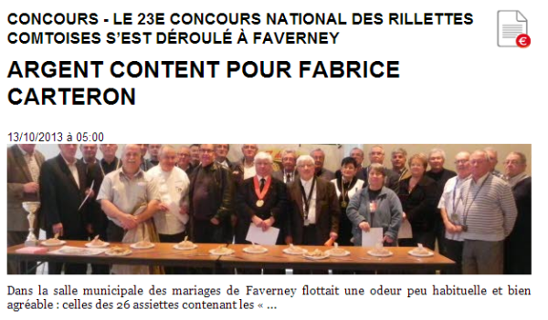
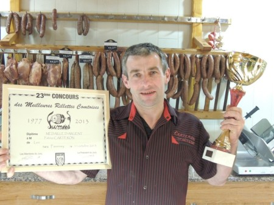
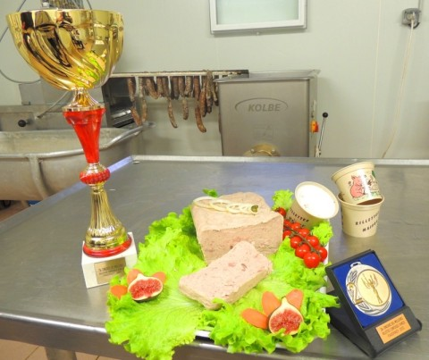
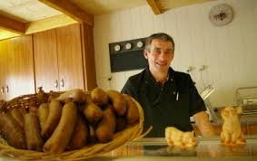

Traiteur Carteron, votre boucher-charcutier-traiteur aux Aynans. Réceptions, mariages, séminaires en Haute-Saône, Doubs et Territoire de Belfort.
Demander un devisTraiteur Carteron, c'est un savoir-faire de boucher-charcutier-traiteur au service de vos événements. Nous intervenons en Haute-Saône, dans le Doubs et le Territoire de Belfort.
Notre force : une cuisine généreuse et authentique, préparée avec des produits de Franche-Comté. De la boucherie à la charcuterie, en passant par la cuisine de réception, nous maîtrisons chaque étape pour vous garantir qualité et fraîcheur.
Un savoir-faire complet pour tous vos événements, du plus intime au plus festif
Mariages, communions, baptêmes. Nous créons avec vous le menu qui fera de votre journée un moment inoubliable, du vin d'honneur au dessert.
Buffets froids ou avec plat chaud, un moment de convivialité autour de nos spécialités franc-comtoises. Viandes, charcuteries, salades et accompagnements.
Cocktails dînatoires ou déjeunatoires. Amuse-bouches, verrines, petits fours et mises en bouche pour surprendre vos convives.
Pauses gourmandes, déjeuners d'affaires, repas d'entreprise. Une restauration professionnelle adaptée à vos besoins.
Notre métier d'origine. Viandes sélectionnées, charcuteries maison, spécialités franc-comtoises. La qualité artisanale au quotidien.
Nous fournissons également le matériel, la décoration et même l'animation musicale pour une prestation clé en main.
Des créations gourmandes préparées avec des produits frais de Franche-Comté




Fabrice Carteron et son équipe mettent leur expérience de boucher-charcutier-traiteur au service de vos événements. Un savoir-faire artisanal transmis avec passion.
De la sélection des viandes à la mise en place de votre réception, nous accompagnons chaque étape avec rigueur et créativité. Notre ambition : que chaque événement soit une réussite.
Pour un devis personnalisé ou toute information, n'hésitez pas à nous contacter.
20 rue des Tilleuls
70200 Les Aynans